3D 안개 2a — 땅을 따라가는 안개, 눈으로 보기
2026-11-16 에 기본 품질(초당 60걸음)과 땅 재질을 평지와 맞춘 무대로 다시 찍은 그림이다.
같은 구도 두 장을 나란히 놓았고, 그림마다 무엇을 볼지 적었다. 판정은 적지 않았다. 아래 일곱 물음의 순서다. 값은 일곱째 항목 아래 표에만 있다(캡처 자료는 에디터 뷰포트 1280x720 장면).
① 비탈과 절벽에서 안개가 땅을 따라 깔려 보이나 (땅 따라가기 켬 대 끔)
왼쪽이 땅 따라가기 켬, 오른쪽이 끔이다. 같은 구도, 같은 시각(4.0초). 아래 깜박이는 그림은 같은 두 장을 번갈아 보여 준다.

능선 윗면과 비탈 위에 안개가 얼마나 붙어 있는지, 판 밑 삼각 그늘의 안개를 본다.
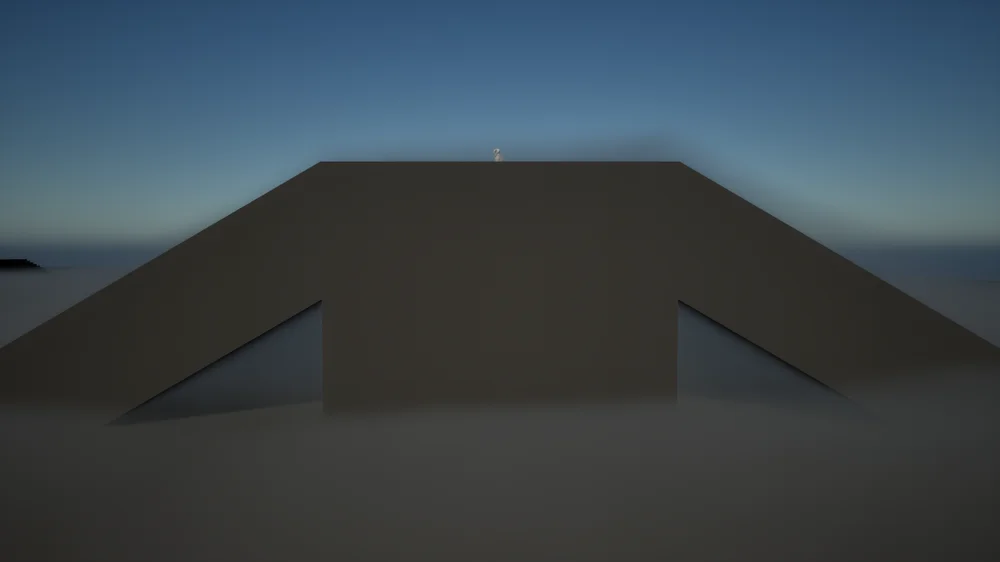
안개 모양이 바뀌는 곳을 본다.

비탈 위에 안개가 떠 있는지 묻혀 있는지 본다.
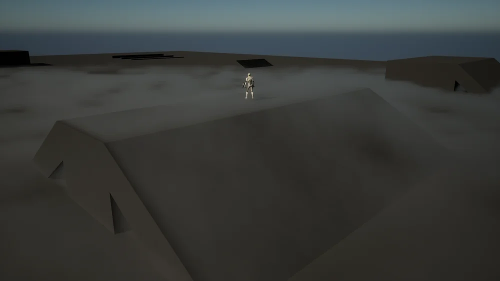

계단 위 안개가 단을 따라가는지, 착지 위에 혹처럼 올라앉는지 본다.

턱 위와 옆의 안개 높이를 본다.

절벽 위와 아래의 안개 높이가 따로 따라가는지 본다.

절벽 위 평지와 아래 평지의 안개 경계를 본다.
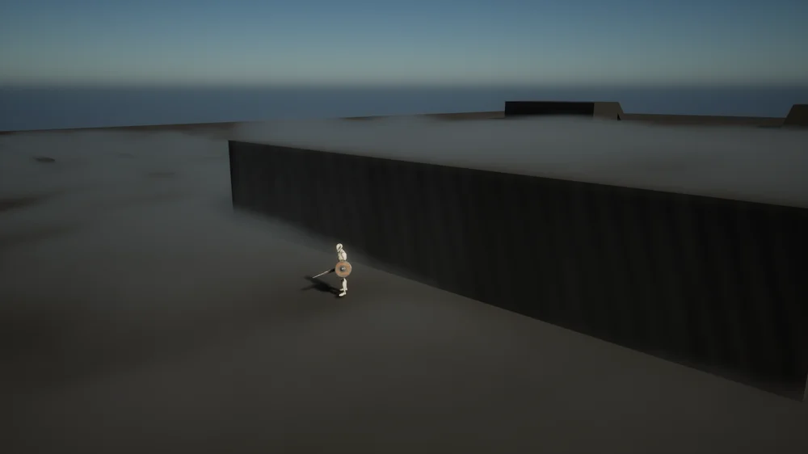
② 절벽 위와 아래, 계단, 턱 옆
왼쪽은 안개 켬(4.0초), 오른쪽은 같은 구도에서 안개 구역을 숨긴 장면(6.0초)이다. 안개가 구조물 어디까지 닿는지 견주어 본다. 아래 움직이는 그림은 왼쪽 평지 걷기, 오른쪽 해당 걷기.

벽면 둘레에 이상한 띠나 끊김이 있는지.


단마다 안개가 계단 모양을 따라가는지, 착지 위에 혹처럼 올라앉는지.

턱 위와 옆의 안개 높이.
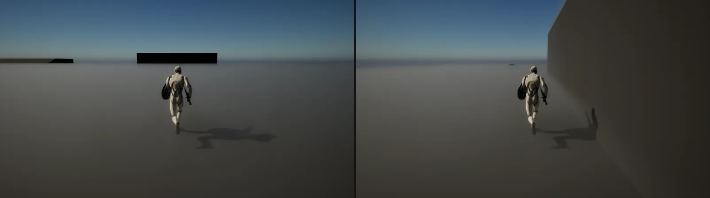
왼쪽 평지 걷기와 자국이 비슷한 느낌인지.
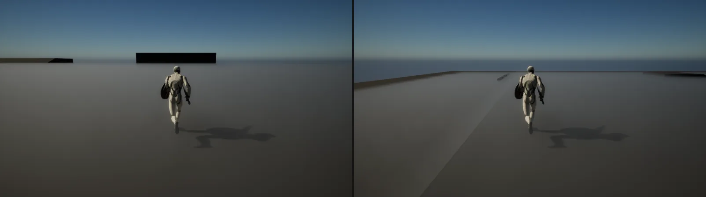
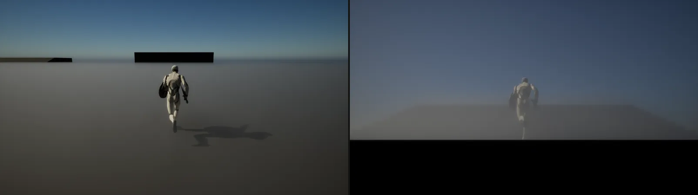
단을 오를 때 자국이 튀는지.
③ 오르막·내리막·등고선·20도·40도 걷기 자국
각 그림은 왼쪽이 평지 걷기(W01), 오른쪽이 해당 걷기. 뒤 카메라, 걷는 중(4.0~4.8초) → 선 뒤 장(6.1~11.6초) → 안개 계산을 끈 기준 장(13.4, 13.9초) 순서로 도는 움직이는 그림. 뒤 카메라는 비탈각만큼 위나 아래를 본다(카메라 틀 차이).
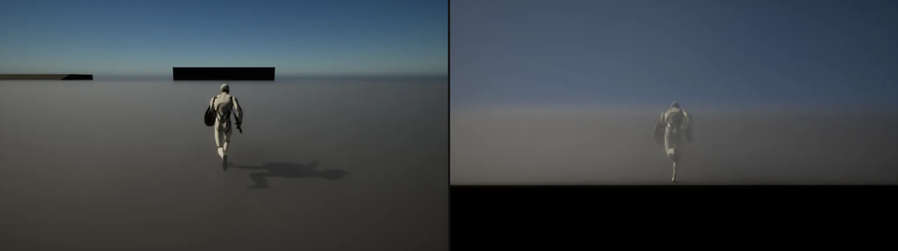
자국 모양과 크기가 평지와 비슷한 느낌인지.
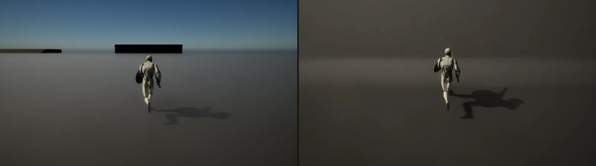
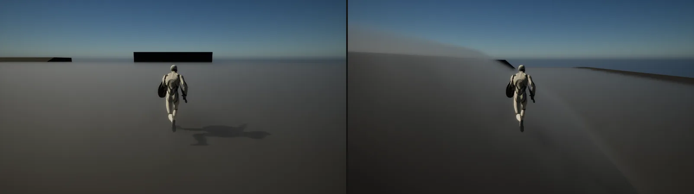
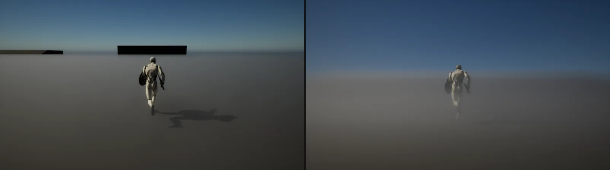
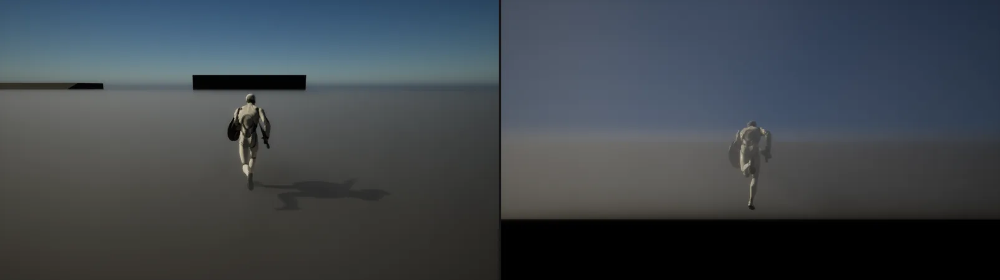
자국이 어색하게 길쭉한지.
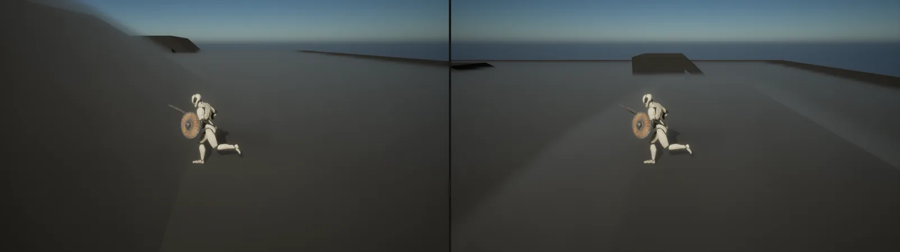
옆에서 볼 때 비탈 위 자국.
④ 60cm·100cm 턱 옆과 비탈 옆 턱
왼쪽 평지 걷기, 오른쪽 해당 걷기. 턱 건너편의 안개가 흔들리거나 새는지 본다(알려진 한계: 60cm 에서는 조금 더 닿는다).
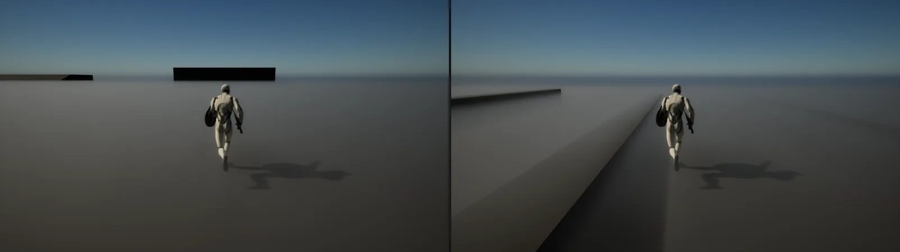
화면의 큰 그림자 경계가 값에 섞인다. 건너편 안개를 본다.
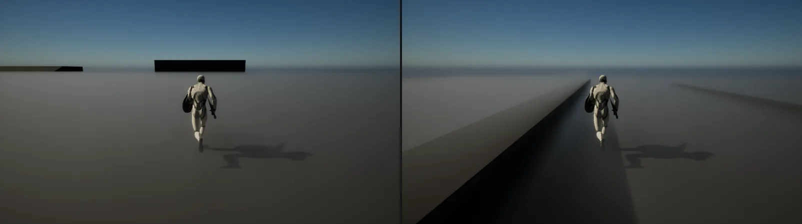
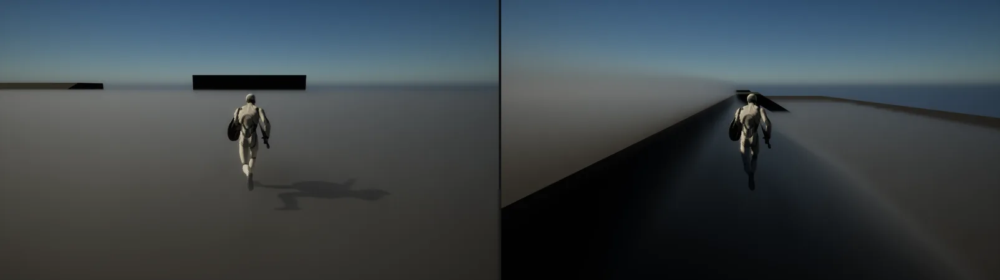
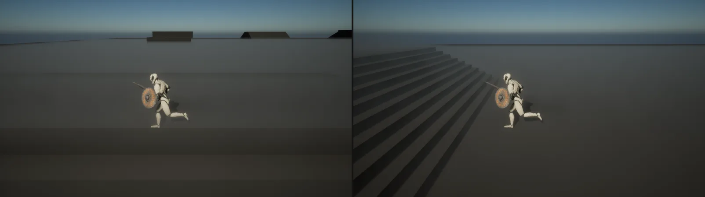
⑤ 땅이 없는 구멍 위와 먼 곳
왼쪽 안개 켬, 오른쪽 구역 숨김. 구멍 위 안개 높이와 화면 먼 곳(창 가장자리 밖) 안개 바닥 높이를 본다.

구멍 위 안개가 둘레와 같은 높이로 뜨는지, 구멍 테두리가 어떻게 보이는지.


먼 곳 안개 바닥 높이.
⑥ 달릴 때 끊김이나 튐
초당 10장(실제 속도)으로 도는 30m 달리기. 옆 카메라 세 개와 뒤 카메라 하나. 맨 아래 한 장은 뒤 카메라에서 장면이 크게 바뀐 두 장(7.0초, 7.1초).
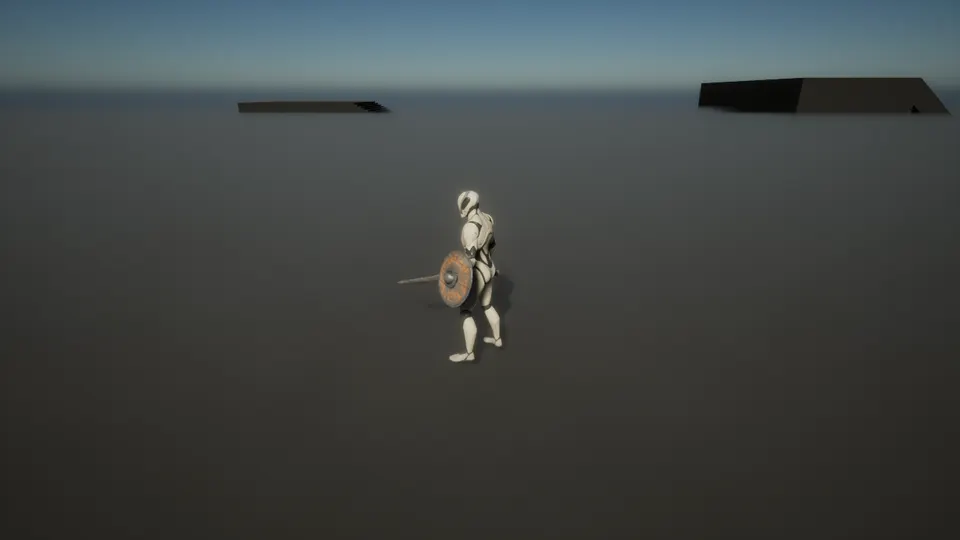
안개가 갑자기 튀거나 끊기는 순간이 있는지.
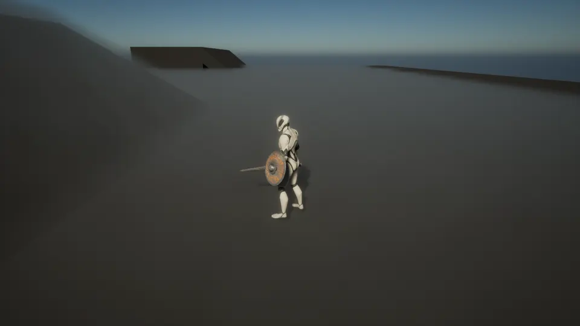
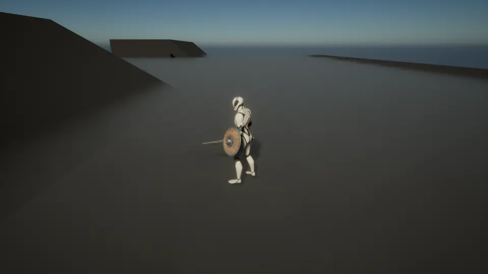
켬과 끊김 정도를 견준다.
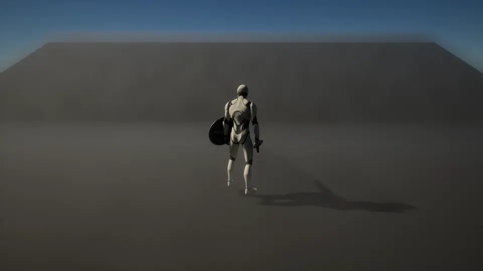
7.1초 근처에서 장면이 확 바뀐다.

7.1초에는 카메라가 능선 윗면 아래로 들어간 모습이다(카메라 위치 탓으로 보임, 안개 탓인지는 이 그림만으로 가리지 못함).
⑦ 한눈에 보는 요약 띠
아홉 장면을 한 장에 모았다. 왼쪽 위부터 능선(옆) · 절벽(높은) · 계단 · 턱 / 30도 오르막 걷기 · 40도 오르막 걷기 · 100cm 턱 옆 걷기 / 구멍(높은) · 달리기(옆).

전체가 같은 안개 느낌으로 이어지는지.
⑨ 실제 지형(랜드스케이프)
레벨 LV_DarkFantasy_OpenWorld(월드 파티션, 랜드스케이프 칸 100cm)에서 PIE 에만 안개 구역을 띄워 찍었다. 경사 약 14~22도 비탈 옆, 구역 바닥 −100cm·윗면 840cm(그 자리 땅 높이 10~540cm). 왼쪽 땅 따라가기 켬, 오른쪽 끔. 끔에서는 안개 층이 구역 바닥 높이(땅 밑)에 깔리므로 화면에 거의 안 보인다 — 끔 그림은 "평평한 층이면 이 자리에서 어떻게 되는가"의 비교로 본다.

비탈과 길 위에 안개가 땅 모양을 따라 얹혀 있는지, 폰 둘레 자국이 보이는지.

길과 둔덕 위 안개 두께가 땅 높낮이를 따라 고르게 보이는지.
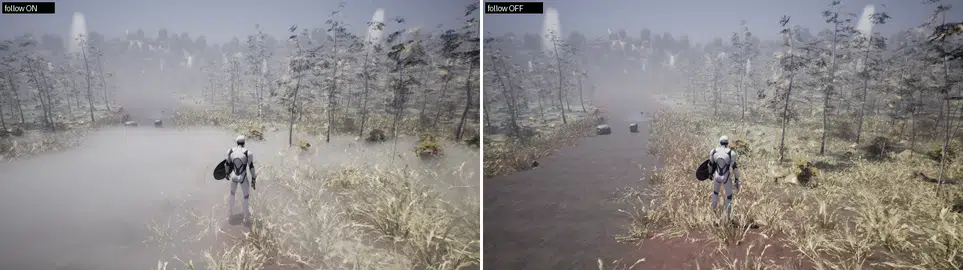
걷는 동안 안개 바닥이 튀거나 끊기는 순간이 있는지. 고해상도 저장 때문에 장 간격이 고르지 않다.

구역을 가로세로 140m 로 키워 캡처 사각형(폰 둘레 60m) 밖도 구역 안에 들게 했다. 화면 아래쪽 앞부분이 캡처 사각형 남쪽 밖이다. 사각형 안과 밖의 안개 바닥 높이 차이가 보이는지.
숫자(되읽기 높이 대 충돌면 높이, 창 이동 때 같은 값인지, 걸음 보류)는 넘김 글 Saved/AgentOps/20261115/fog3d/stage2a/landscape/landscape-handoff.md 에 있다.
참고 값: 안개 켬−끔 화면 밝기 차
| 칸 | 카메라 | 켬−끔 밝기 차(255) | 평지 옆 대비 | 같은 카메라 분모 비 | 끈 값 | 켠 ÷ 끈 |
|---|---|---|---|---|---|---|
| F | side | 23.35 | 1.00 | 1.00 | 23.35 | 1.00 |
| S30 | side | 11.80 | 0.51 | 0.51 | 9.98 | 1.18 |
| CL | side | 12.52 | 0.54 | 0.54 | 12.01 | 1.04 |
| ST | side | 17.01 | 0.73 | 0.73 | 17.69 | 0.96 |
| CB | side | 18.98 | 0.81 | 0.81 | 18.98 | 1.00 |
| HO | high | 13.45 | 0.58 | 1.01 | - | - |
| HO | side | 22.25 | 0.95 | 0.95 | - | - |
| S30 | high | 13.10 | 0.56 | 0.98 | 5.91 | 2.21 |
| CL | high | 10.42 | 0.45 | 0.78 | 7.71 | 1.35 |
| F | high | 13.32 | 0.57 | 1.00 | 13.31 | 1.00 |
평지 칸은 옆 카메라 하나만 있어 모든 비의 분모는 평지 옆 카메라 값이다.
⑧ 땅 따라가기를 기본값으로 켤 것인가
위 그림을 본 뒤 사용자가 정한다. 지금 기본값은 꺼짐이다.